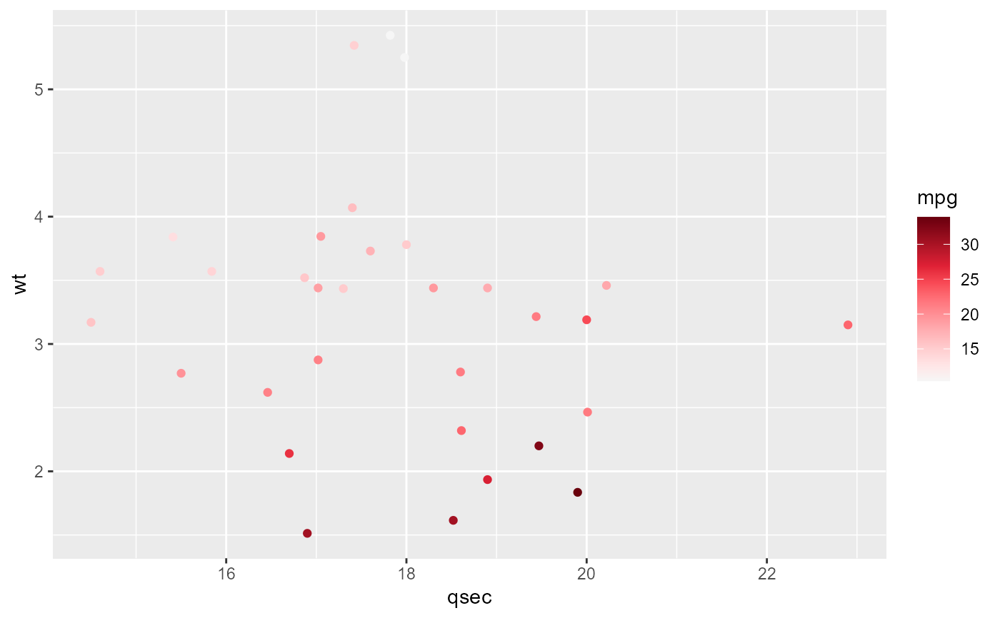

scale_color_add_on.RdA wrapper around a variety of scale_color_-() / scale_fill_-()
functions.
scale_color_add_on( aes = "color", variable = "numeric", clrsp = NULL, clrp = NULL, clrp.adjust = NULL, ... )
| aes | Character value. Either 'color' or 'fill'. Denotes the used aesthetic. |
|---|---|
| variable | The variable that is mapped onto the denoted aesthetic or a character value - one of 'numeric', 'discrete'. |
| clrsp | Character value. The color spectrum of choice. Run (Ignored if |
| clrp | Character value. The color palette of choice.
Run (Ignored if |
| clrp.adjust | Named character vector or NULL. If character, it adjusts the colors that are used to represent the groups. Names of the input vector must refer to the group and the respective named element denotes the color with which to represent the group. |
| ... | Additional arguments given to the respective function.
|
An unnamed list containing the ggproto object.
If the specified clrp does not contain enough colors to cover the
specified variable NULL is returned - which makes the call to ggplot2::ggplot()
use the default ggplot2 color panel.
#> Warning: package 'ggplot2' was built under R version 4.0.3ggplot(mtcars, aes(x = qsec, y = wt)) + geom_point(aes(color = mpg)) + scale_color_add_on(aes = "color", clrsp = "Reds 3")